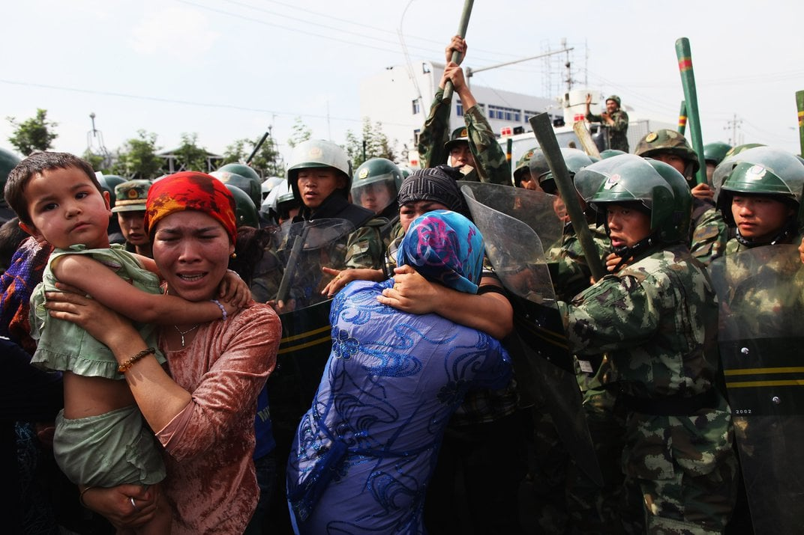
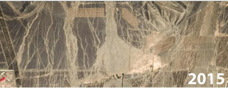
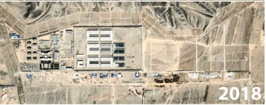
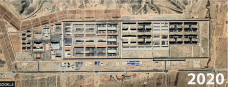

Who are the Uyghurs?
An ethnic minority of China, living mostly in the Xinjiang province in the northwest
Estimated population of 12 million
They have their own separate language which is similr to Turkish
Activists within the group fear for the future of the Uyghurs due to China's abuse
Uyghur Oppression
Started in 2013, when China wanted tighter control of the Xinjiang region
Many passports of Uyghur people were revoked
Mass surveillance with AI, to detect "suspicious" people
Detention centers were built, holding an estimated 1-3 million Uyghurs
Chinese government claims that they are "Re-Education centers"
Rape and torture are common in these centers, as well as forced sterilization and abortions

Chinese Point of View
Most citizens unaware of this, because reporting on it is banned
Chinese government states that the Uyghurs go to the camps willingly to "get educated"
Government completely denies any human rights abuse
Some Uyghurs outside of Xinjiang clame that there is no human rights abuse
Uyghurs living outside of China state that their family members have experienced abuse in these camps
Concentration camps
Satellite imagery shows concentration camps being built quickly in the area
Things the Chinese government is being accused of:
Genocide
Sending many Han Chinese (ethnic majority) to the area to dilute the population
Forced sterilization and abortions to lower population of Uyghurs
Destroying Uyghur places of worship and burial sites
Forcing Uyghurs to pick the abundant cotton in the area for very very little pay, if at all
Many human rights violations, multiple countries claim
China denies these allegations
Police files obtained by BBC show a "shoot to kill" policy for any escape attempts



Uyghur Point of View
Uyghurs who have managed to escape have said that conditions in the camps are horrible
They have a long history of being in the area, and now China is trying very hard to get them out of there
Many have had family members "disappear", causing great trauma and fear within the community
In these camps, they are forced to learn Mandarin and give up their culture
Many believe that China's actions are aimed at erasing Uyghur identity off the face of the earth